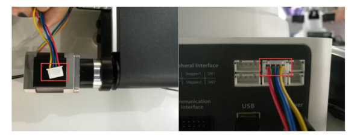
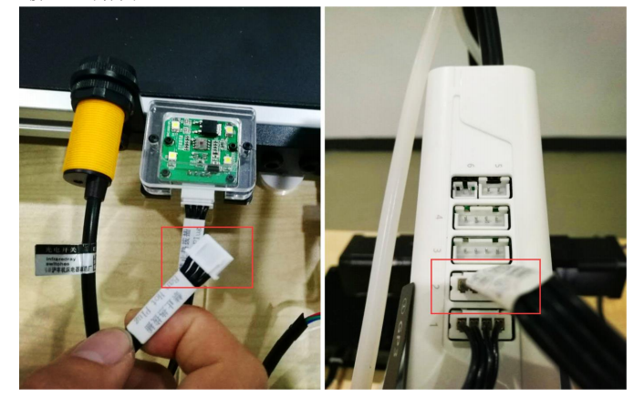
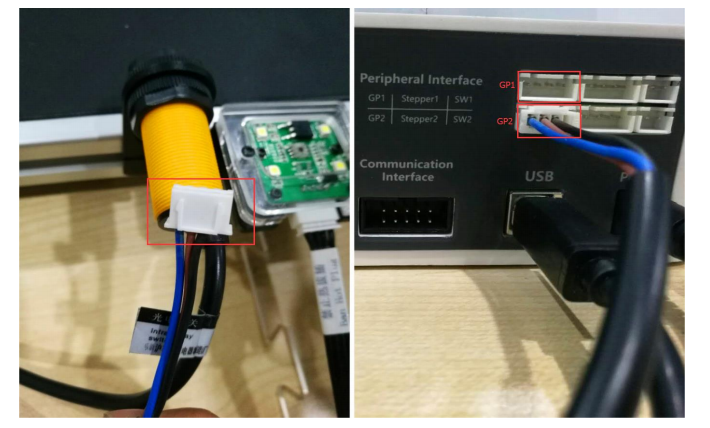
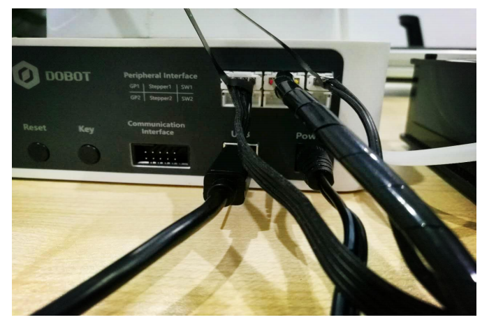
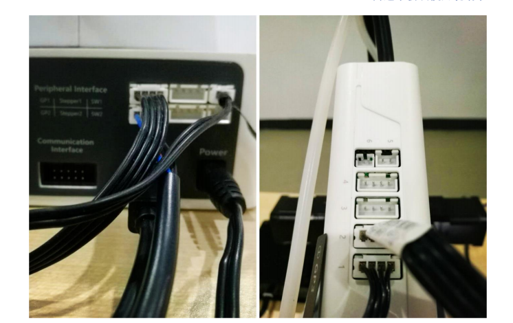

传送带
传送带套件安装步骤： 
注意:请在机械臂完全断电的情况下断开或者连接外部设备,如蓝牙、WiFi、手柄、红外传感器套件、颜色传感器套件等,否则容易造成机器损坏!关闭机械臂时,待指示灯熄灭后机械臂才完全断电。
正常操作步骤如下:
- 先插入蓝牙/wifi/手柄/红外传感器/颜色传感器模块;
- 再开启机械臂主电源;
- 蜂鸣器响3声(wifi2声,手柄4声),表示模块初始化完成;
- 然后即可按手册步骤(请参考官网使用说明书)控制机器。
1、将传送带的电机线接在第一台机械臂的主控盒接口 Stepper1 上,如图:

2、将颜色传感器的线接在第二台机械臂的主控盒接口 GP1/GP2/GP4/GP5 上(全文以固定接口GP4为例),如图:

3、将红外传感器的电源线接在第二台机械臂的主控盒接口 GP1/GP2 上(全文以固定接口GP2为例),如图:

4、整体接线效果图:

